Avivamiento de la calle Azusa (1906)
 En 1900 desciende el Espíritu Santo sobre el Colegio Bíblico Betel en Topeka, Kansas pero no hasta que William J. Seymour, un estudiante afro-americano, se traslada a Los Ángeles, California que empezaría el avivamiento Pentecostal. Por su predicación es expulsado de la iglesia que lo invito y busca al Señor en casa de un amigo. El es lleno del Espíritu Santo y su ministerio empieza a tener señales, prodigios y milagros hasta que mueve su naciente misión a un establo en la calle Azusa. Allí tendría tres servicios del poder de Dios cada día, por los próximos tres años.
En 1900 desciende el Espíritu Santo sobre el Colegio Bíblico Betel en Topeka, Kansas pero no hasta que William J. Seymour, un estudiante afro-americano, se traslada a Los Ángeles, California que empezaría el avivamiento Pentecostal. Por su predicación es expulsado de la iglesia que lo invito y busca al Señor en casa de un amigo. El es lleno del Espíritu Santo y su ministerio empieza a tener señales, prodigios y milagros hasta que mueve su naciente misión a un establo en la calle Azusa. Allí tendría tres servicios del poder de Dios cada día, por los próximos tres años.
Misión de la Fe Apostólica Español (1912)
Dado a la cercanía entre el barrio Hispano de la Placita Olvera y la Calle Azusa, muchos Hispanos experimentaron Pentecostés en Azusa. Pero en 1909 hay reportes que un grupo de Hispanos es expulsado de la misión. Estos solos se organizan y ya para 1912 esta registrada la primera iglesia Apostólica hispana en Los Ángeles en la casa del Pastor Genaro Valenzuela.
Campamento de Arroyo Seco (1913)
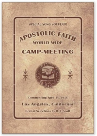Robert McAllister, un ministro canadiense, predicó un sermón sobre el bautismo en el nombre de Jesús en este campamento pentecostal organizado unas millas al norte de Los Ángeles. John G. Schaepe, un pentecostal alemán, escuchó el sermón y pasó toda la noche pidiendo a Dios revelación. En la mañana sale gritando por todo el campamento que había recibido revelación del poder en el nombre de Jesús. Esto impulsó a muchos a estudiar y redescubrir en la Biblia la unicidad de Dios.
Primeras Convenciones (1925)
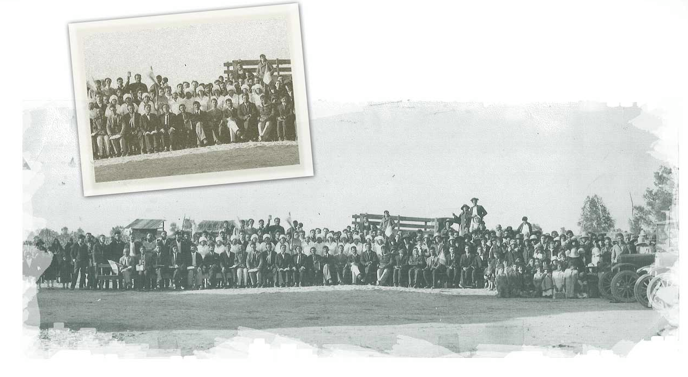Dado al crecimiento explosivo del mensaje Apostólico nuestros primeros pastores sintieron la necesidad de organizarse en 1925 para cumplir mejor la misión. La primera convención fue celebrada en San Bernardino, California en 1925 donde los primeros acuerdos que se tomaron en un espíritu de reconciliación y unanimidad. Y en 1926 en Indio, California se confirma y publica nuestra primera declaración doctrinal, el Catequista del Concilio Apostólico Cristiano del Pentecostés. Para 1926 había ya iglesias en California, Arizona, Nuevo México, Texas y Baja California (México). En 1927 se celebra la convención en Colonia Zaragoza, Baja California siendo la única convención celebrada en el extranjero.
Incorporación (1930)
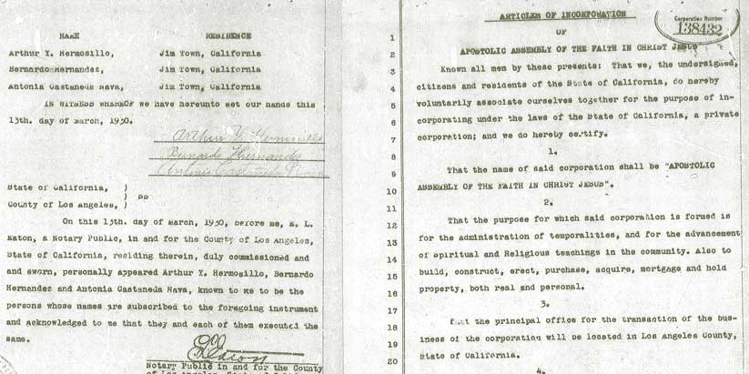Dado al crecimiento explosivo del mensaje Apostólico nuestros primeros pastores sintieron la necesidad de organizarse en 1925 para cumplir mejor la misión. La primera convención fue celebrada en San Bernardino, California en 1925 donde los primeros acuerdos que se tomaron en un espíritu de reconciliación y unanimidad. Y en 1926 en Indio, California se confirma y publica nuestra primera declaración doctrinal, el Catequista del Concilio Apostólico Cristiano del Pentecostés. Para 1926 había ya iglesias en California, Arizona, Nuevo México, Texas y Baja California (México). En 1927 se celebra la convención en Colonia Zaragoza, Baja California siendo la única convención celebrada en el extranjero.
Himnos de Consolación (1931)
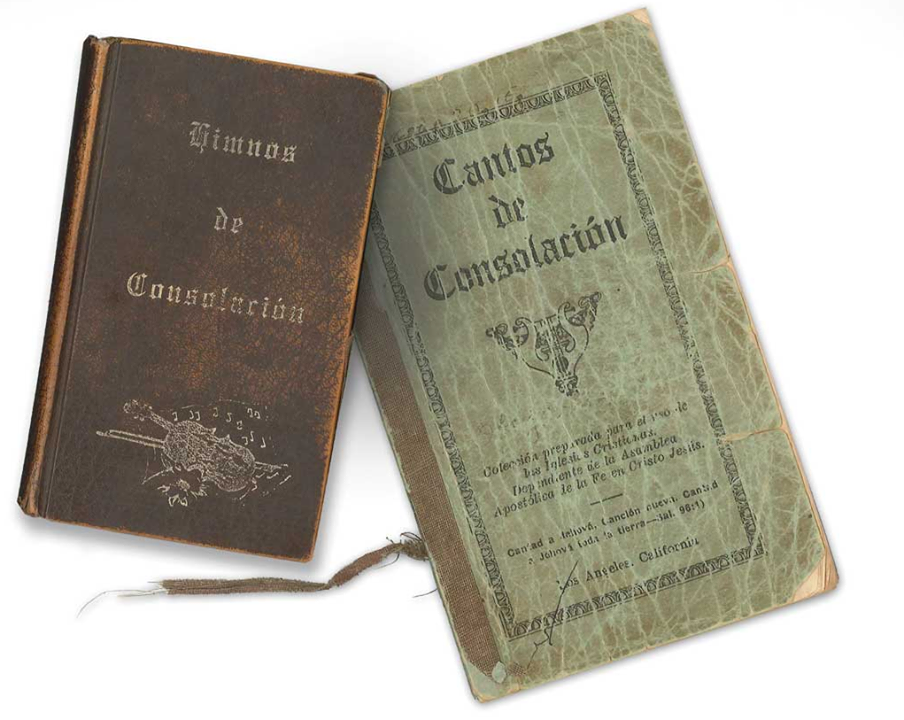Dado al crecimiento explosivo del mensaje Apostólico nuestros primeros pastores sintieron la necesidad de organizarse en 1925 para cumplir mejor la misión. La primera convención fue celebrada en San Bernardino, California en 1925 donde los primeros acuerdos que se tomaron en un espíritu de reconciliación y unanimidad. Y en 1926 en Indio, California se confirma y publica nuestra primera declaración doctrinal, el Catequista del Concilio Apostólico Cristiano del Pentecostés. Para 1926 había ya iglesias en California, Arizona, Nuevo México, Texas y Baja California (México). En 1927 se celebra la convención en Colonia Zaragoza, Baja California siendo la única convención celebrada en el extranjero.
Iglesia Apostólica (1933)
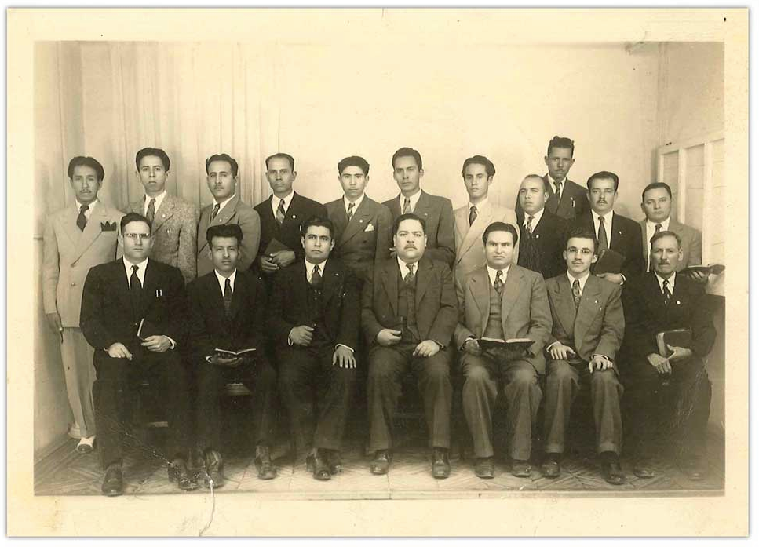Después del viaje en 1914 por la primera misionera apostólica, Romanita Valenzuela, se levantaron muchos predicadores del mensaje apostólico en México. Para 1928 el hermano Nava aprovecha su visita a México para conocer la obras nacientes e impulsa a nuestro hermano Felipe Rivas Hernández a organizar la Iglesia Apostólica de la Fe en Cristo Jesús. Estos ministros recibieron cobertura inicial de la Asamblea Apostólica y para 1933 oficialmente se incorporan. El hermano Rivas junto a otros como José Ortega Aguilar y Maclovio Gaxiola son recordados en nuestra historia por su compañerismo y aportes.
Constitución (1944)
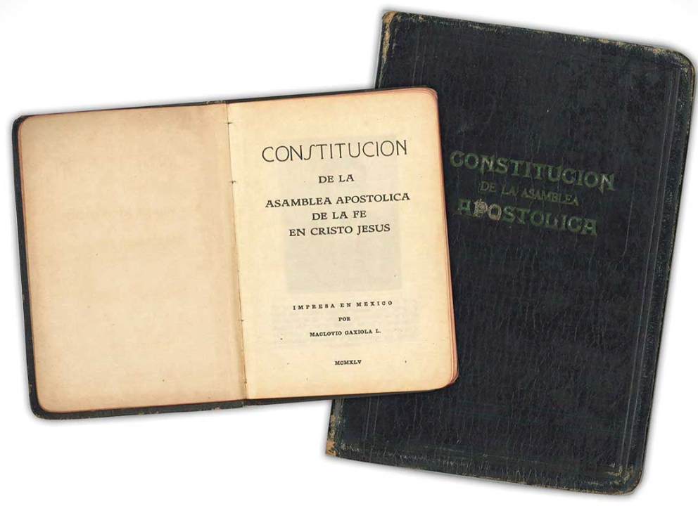Hasta 1944 eran los acuerdos tomados en Convención General lo que regia a la Asamblea. Desde el principio se vio la necesidad de tener reglamentos escritos y bien elaborados, mas los fundadores tomaron su tiempo estudiando cuidadosamente una futura constitución. El comité se Constitución fue Arturo Y. Hermosillo y por parte de la Iglesia Apostólica: Felipe Rivas, José Ortega y Maclovio Gaxiola. Ellos finalizaron sus trabajos y se ratifico en la convención de 1944 la Constitución y el Tratado de Unificación.
Misiones en Latinoamérica (1948)
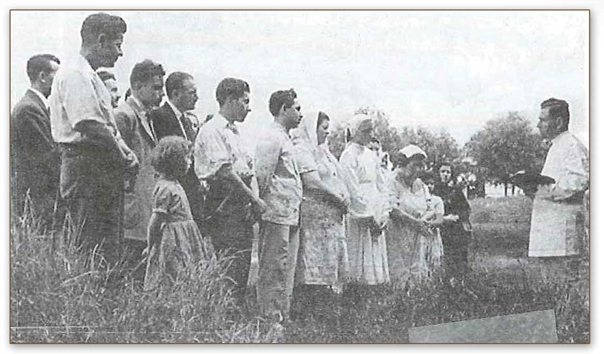Cartas de hermanos en Nicaragua llegaban a la Asamblea Apostolica desde 1948. Se presentó la necesidad de enviar una misionero para organizar la iglesia. Fue comisionado nuestro hermano Leonardo Sepúlveda (1911-2016). Solo nueve meses después de su regreso de Centroamérica en 1052 nuestro hermano Leonardo Sepúlveda se dirigió para el país de Uruguay. Trabajaría los próximos siete años estableciendo la Asamblea Apostólica en Uruguay y Argentina hasta su regreso en 1960.
Misiones en Europa (1962)
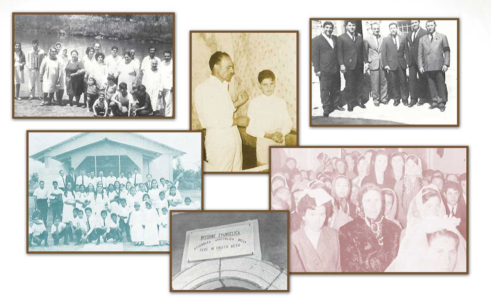Carmine Cogliano, un inmigrante Italiano viviendo en Argentina escuchó el evangelio de nuestro hermano Leonardo Sepúlveda. En 1962 decide regresarse a su país natal y establece con su familia la primera iglesia en Gesualdo, Italia. La obra prospera y ya en los setentas los hermanos empiezan a salir por cuestiones de trabajo del sur del país al norte. En 1970 sale nuestro primer misionero a España, el joven Richard Almaraz.
Colegio Bíblico Apostólico Nacional (1966)
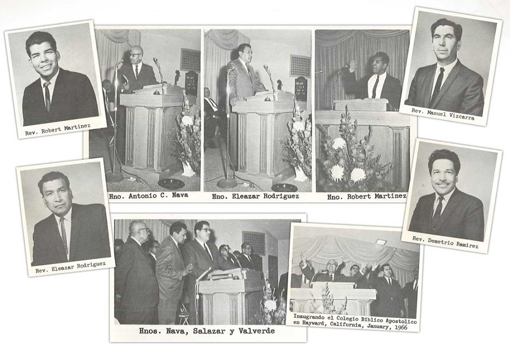Tarde en la década de los cincuenta se empezó discusión en la Mesa Directiva sobre la necesidad de crear un instituto para educación teológica apostólica. En 1965 se tomó el acuerdo de crear el “Colegio Bíblico Apostólico Nacional” en Hayward, California. Se inauguró en enero de 196 siendo el Presidente del Colegio Antonio C. Nava, Rector Eleazar Rodríguez, Secretario-Decano Demetrio Ramírez y Tesorero Manuel Vizcarra. El C.B.A.N. después ha estado en las ciudades de San José, California y Ontario, California hasta que finalmente, empezando en el nuevo milenio, se estableció un Colegio Bíblico en cada distrito. Para el proceso de acreditación se cambio el nombre en 2007 a “Colegio Bíblico Apostólico Internacional” y su sede central que cubre tres distritos esta en El Monte, California.
Cincuentenario de la Asamblea (1966)
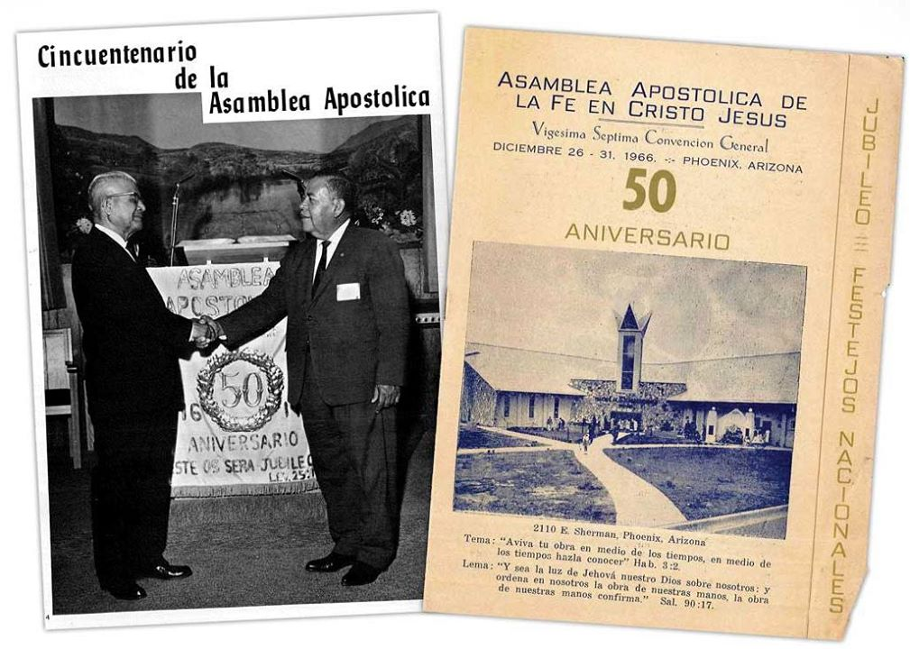En 1916 fue cuando los hermanos Marcial de la Cruz, Francisco Llorente y Antonio C. Nava se juntaron para trabajar en el reino de Dios. Esto se tomó, en ese entonces, como el año del nacimiento de la Asamblea Apostólica. 1966 se declaró como “Año de Jubileo”, y en la Convención General de 1966 que fue en Phoenix, Arizona se hicieron grandes reformas a la Constitución, un gran festejo con aportes de todos los distritos y elección de nuevos mienbros de la Mesa Directiva General.
Misiones en el Caribe (1971)
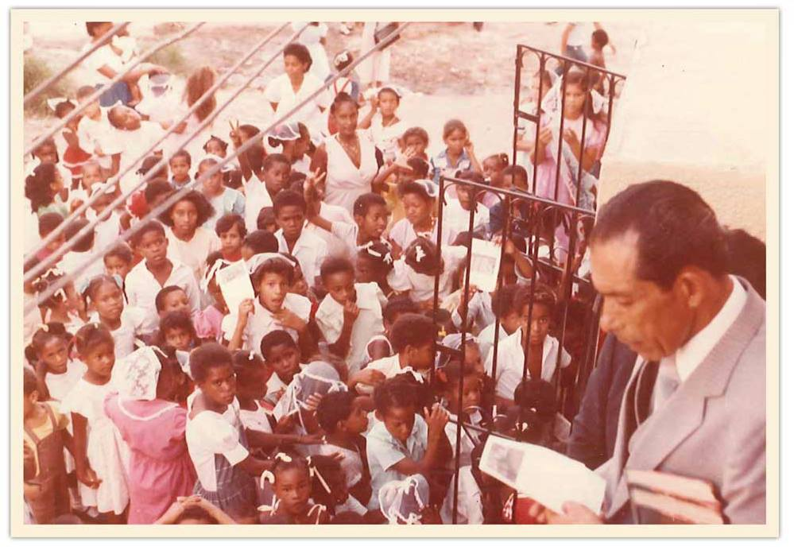1971 fue el año en que el hermano Fidel Almaraz arribó a Puerto Rico. Laiglesia allí crecería a tener cinco obras establecidas para el fin de esa década. Después en 1978 el hermano Fidel partiría para la República Dominicana. Allí plantaría mas iglesia fructíferas. En 2010 finalmente se plantaría mas iglesias en Haití. Esta región ahora cuenta con mas de treinta iglesias gracias al ministerio apostólico del hermano Fidel Almaraz.
Evangelistas y Campañas
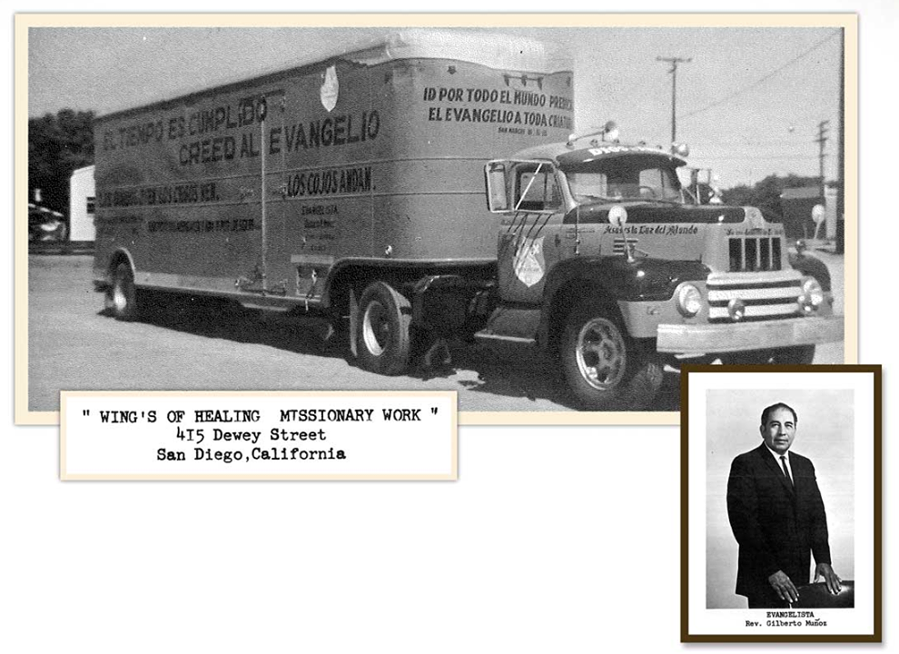Las cruzadas evangelisticas y fervor chiliasta marcó este tiempo. El hermano Lorenzo Salazar tenia como uno de los lemas de su administración: Avivamiento antes del Levantamiento. Dios usó a muchos hombres por este tiempo como el Evangelista Gilberto Muñoz, quien tenia un don poderoso de sanidad. Carlos Ceniceros Jr. también resalta, un hombre de fervor evangélico, llamaba a los predicadores a salvación con su estilo único de predicación.
Oficinas Generales (1993)
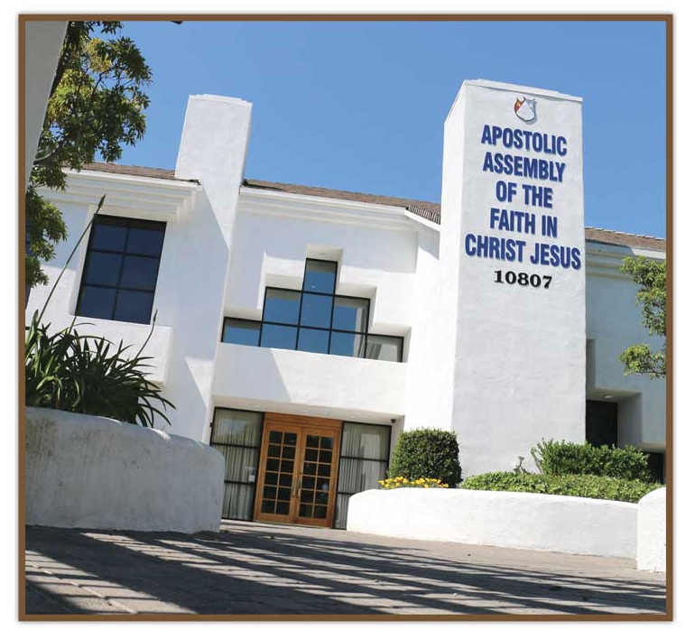Las primeras oficinas generales estaban localizadas en la ciudad actual de Whittier (antes conocida como Jimtown, California), que fue la iglesia del hermano Bernardo Hernández, de 1927 a 1935. Las oficinas serian movidas al hogar del Obispo Antonio C. Nava y su iglesia de ese entonces El Siloe en el Este de Los Ángeles. En 1967 la asamblea rentaría sus primeras oficinas en Los Ángeles y compraría en la misma ciudad en 1968 sus primeras oficinas administrativas. Para el comienzo de la década de los noventas el Obispo Presidente Manuel Vizcarra vio la necesidad de tener oficinas mas amplias y creí un comité pro-Oficinas Generales, un comité que tenia a los Obispos Richard Almaraz y Abel C. Jiménez. En 1993 La Asamblea Apostólica compraría y dedicaría nuestras oficinas generales presentes en Rancho Cucamonga, California.
Fundación Antonio C. Nava (1993)
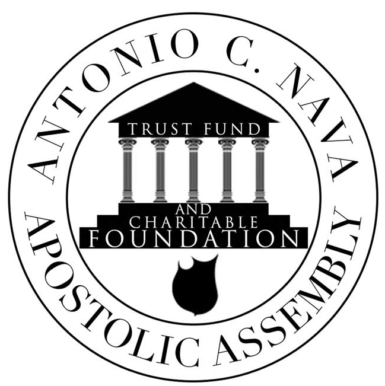Gran necesidad se levanta en la iglesia para proveer a nuestros pastores y miembros que pasaban por necesidad. El Obispo Daniel Sánchez, trazó la idea de establecer el primer fondo fiduciario a la Asamblea Apostólica y la Mesa Directiva dio su visto bueno. La Fundación A. C. Nava existe para proveer asistencia financiera a pastores en necesidad, en tragedias repentinas, becas estudiantiles y atención de desastres. muchos de nuestros miembros y pastores han sido bendecidos por este fondo y muchos mas estudiantes han estudiado su educación por los medios previstos en estas becas dads en cada Convención.
Escuela de Obispos (2012)
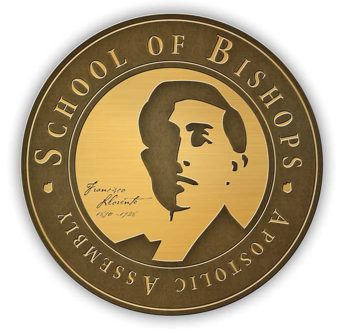El desarrollo de liderazgo para nuestros Obispos y Misioneros es una prioridad en un mundo mas acelerado y conectado. Por esto la Mesa Directiva General comenzó la Escuela de Obispos en el año 2012. La Escuela de Obispos es innovadora en que junta al liderazgo misionero de nuestra iglesia en el extranjero y nuestro Obispo distritales en los Estados Unidos. En el 2013 la segunda Escuela de Obispos internacionales fue celebrada.
Estrategia de Jesús
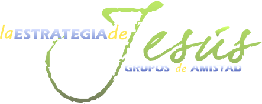Nuestro plan oficial misionológico comenzó en 2006. Inspirado por los pastores de crecimiento hallados en los Evangelios y el libro de los Hechos, el Obispo Ismael Martín del Campo presentó un plan de evangelismo centrado en grupos pequeños a la Mesa Directiva y la Convención. Ambas ratificaron este plan y continua dando resultados extraordinarios no solo en los Estados Unidos pero en el extranjero como en Argentina, donde el crecimiento se ha triplicado en los últimos tres años. Una iglesia en los templos y en los hogares, como Jesús y la Iglesia primitiva, es el futuro de nuestra Iglesia.
Escuela de Pastores
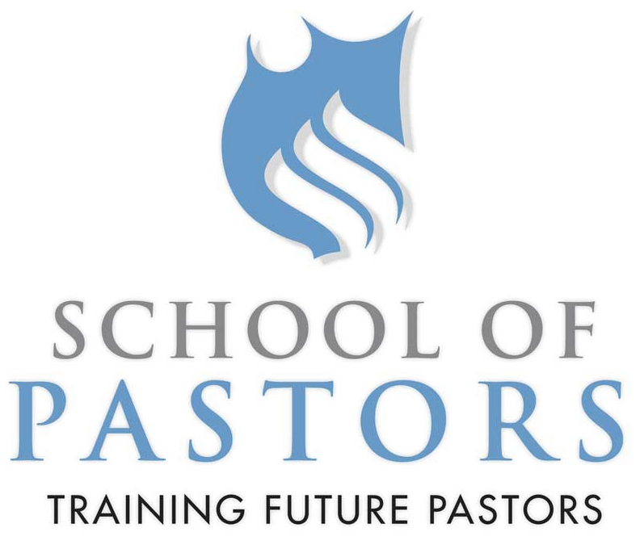Existe una grande necesidad de entrenar nuevos pastores, fundadores de iglesias y misioneros. La Escuela de Pastores fue creada para entrenar hombres en la responsabilidades doctrinales, litúrgicas y pastorales de la iglesia. Compuesta de dos módulos, uno en California y el otro en Texas, el programa free una reserva de candidatos listos para ser enviados a diferentes iglesias. Nuestro Secretario de Misiones Nacionales, el Obispo Joe Aguilar, esta a cargo de este programa.
Volver